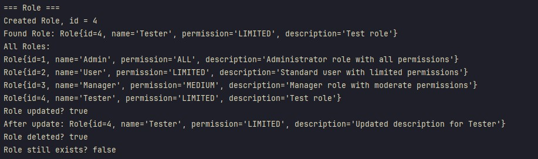
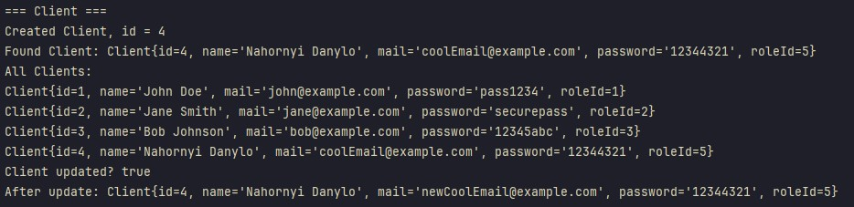
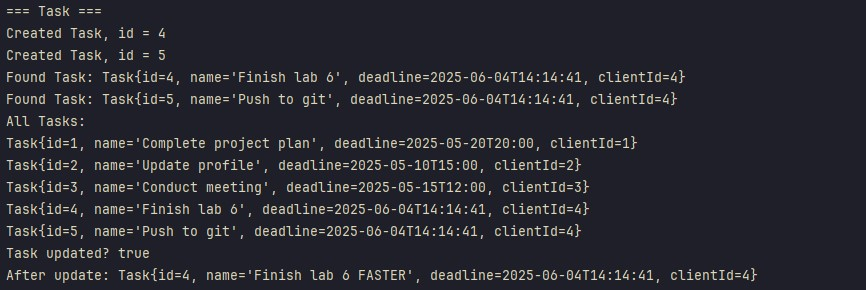
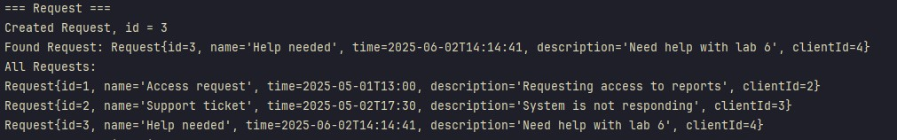
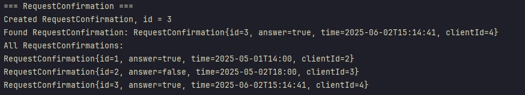
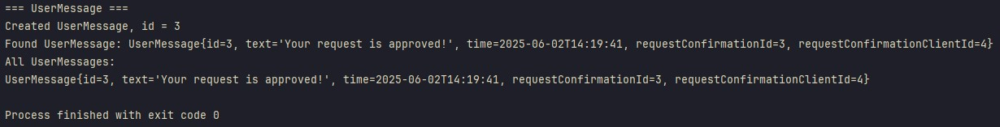

Тестування працездатності системи
Код для тесту має наступний вигляд:
package db;
import db.dao.*;
import db.model.*;
import java.time.LocalDateTime;
import java.util.List;
import java.util.Optional;
public class Test {
public static void main(String[] args) {
try {
RoleDAO roleDAO = new RoleDAO();
ClientDAO clientDAO = new ClientDAO();
TaskDAO taskDAO = new TaskDAO();
RequestDAO requestDAO = new RequestDAO();
RequestConfirmationDAO rcDAO = new RequestConfirmationDAO();
UserMessageDAO userMessageDAO = new UserMessageDAO();
// Role
System.out.println("=== Role ===");
Role r1 = new Role(null, "Tester", "LIMITED", "Test role");
Long r1Id = roleDAO.create(r1);
System.out.println("Created Role, id = " + r1Id);
Optional<Role> maybeR = roleDAO.findById(r1Id);
maybeR.ifPresent(r -> System.out.println("Found Role: " + r));
List<Role> allRoles = roleDAO.findAll();
System.out.println("All Roles:");
allRoles.forEach(System.out::println);
r1.setId(r1Id);
r1.setDescription("Updated description for Tester");
boolean roleUpdated = roleDAO.update(r1);
System.out.println("Role updated? " + roleUpdated);
roleDAO.findById(r1Id).ifPresent(r -> System.out.println("After update: " + r));
boolean roleDeleted = roleDAO.delete(r1Id);
System.out.println("Role deleted? " + roleDeleted);
System.out.println("Role still exists? " + roleDAO.findById(r1Id).isPresent());
System.out.println();
// Client
System.out.println("=== Client ===");
// Створимо роль для клієнта
Role baseRole = new Role(null, "BaseRole", "LIMITED", "Base role");
Long baseRoleId = roleDAO.create(baseRole);
Client c1 = new Client(null, "Nahornyi Danylo", "coolEmail@example.com", "12344321", baseRoleId);
Long c1Id = clientDAO.create(c1);
System.out.println("Created Client, id = " + c1Id);
Optional<Client> maybeClient = clientDAO.findById(c1Id);
maybeClient.ifPresent(c -> System.out.println("Found Client: " + c));
List<Client> allClients = clientDAO.findAll();
System.out.println("All Clients:");
allClients.forEach(System.out::println);
// Оновимо клієнта
c1.setId(c1Id);
c1.setMail("newCoolEmail@example.com");
boolean clientUpdated = clientDAO.update(c1);
System.out.println("Client updated? " + clientUpdated);
clientDAO.findById(c1Id).ifPresent(c -> System.out.println("After update: " + c));
// Task
System.out.println("=== Task ===");
LocalDateTime dl = LocalDateTime.now().plusDays(2);
Task t1 = new Task(null, "Finish lab 6", dl, c1Id);
Long t1Id = taskDAO.create(t1);
System.out.println("Created Task, id = " + t1Id);
Task t2 = new Task(null, "Push to git", dl, c1Id);
Long t2Id = taskDAO.create(t2);
System.out.println("Created Task, id = " + t2Id);
Optional<Task> maybeTask1 = taskDAO.findById(t1Id);
maybeTask1.ifPresent(t -> System.out.println("Found Task: " + t));
Optional<Task> maybeTask2 = taskDAO.findById(t2Id);
maybeTask2.ifPresent(t -> System.out.println("Found Task: " + t));
List<Task> allTasks = taskDAO.findAll();
System.out.println("All Tasks:");
allTasks.forEach(System.out::println);
// Змінимо назву завдання
t1.setId(t1Id);
t1.setName("Finish lab 6 FASTER");
boolean taskUpdated = taskDAO.update(t1);
System.out.println("Task updated? " + taskUpdated);
taskDAO.findById(t1Id).ifPresent(t -> System.out.println("After update: " + t));
// Request
System.out.println("=== Request ===");
LocalDateTime rt = LocalDateTime.now();
Request req1 = new Request(null, "Help needed", rt, "Need help with lab 6", c1Id);
Long req1Id = requestDAO.create(req1);
System.out.println("Created Request, id = " + req1Id);
Optional<Request> maybeReq = requestDAO.findById(req1Id);
maybeReq.ifPresent(r -> System.out.println("Found Request: " + r));
List<Request> allRequests = requestDAO.findAll();
System.out.println("All Requests:");
allRequests.forEach(System.out::println);
// RequestConfirmation
System.out.println("=== RequestConfirmation ===");
LocalDateTime rct = LocalDateTime.now().plusHours(1);
RequestConfirmation rc1 = new RequestConfirmation(null, true, rct, c1Id);
Long rc1Id = rcDAO.create(rc1);
System.out.println("Created RequestConfirmation, id = " + rc1Id);
Optional<RequestConfirmation> maybeRc = rcDAO.findById(rc1Id);
maybeRc.ifPresent(rc -> System.out.println("Found RequestConfirmation: " + rc));
List<RequestConfirmation> allRC = rcDAO.findAll();
System.out.println("All RequestConfirmations:");
allRC.forEach(System.out::println);
System.out.println("=== UserMessage ===");
LocalDateTime umt = LocalDateTime.now().plusMinutes(5);
UserMessage um1 = new UserMessage(null, "Your request is approved!", umt, rc1Id, c1Id);
Long um1Id = userMessageDAO.create(um1);
System.out.println("Created UserMessage, id = " + um1Id);
Optional<UserMessage> maybeUm = userMessageDAO.findById(um1Id);
maybeUm.ifPresent(um -> System.out.println("Found UserMessage: " + um));
List<UserMessage> allUM = userMessageDAO.findAll();
System.out.println("All UserMessages:");
allUM.forEach(System.out::println);
} catch (Exception e) {
e.printStackTrace();
}
}
}
Результати виконання:
Створено, змінено, та видалено нову роль: 
Створено нову роль, та клієнта з нею; Змінено пошту клієнта: 
Створено 2 задачі, у одної змінено назву: 
Створено новий запит: 
Створено підтвердження для цього запиту: 
Створено повідомлення: 